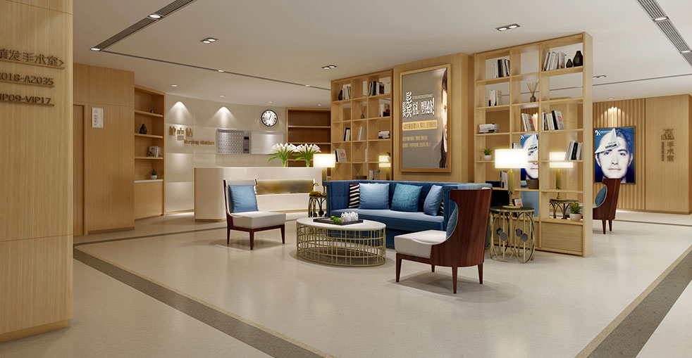

為頭皮供體不足的患者提供先進的體毛萃取與移植技術

我們的體毛移植技術為頭皮供體有限的患者提供了進階解決方案。我們可以安全地從胸部、背部、腿部及手臂等多個身體部位萃取優質毛囊，然後移植到頭皮以達到優異的效果。此項技術讓原先被判定為「不適合植髮」的患者也能進行毛髮修復。
個人化體毛移植，完整保護您的隱私
先進技術拓展供體可能性
完整評估頭皮及體毛供體的數量與品質
策略性結合頭皮及體毛毛囊以達最佳覆蓋效果
運用專業技術從多個身體部位進行先進FUE萃取
仔細準備並保存體毛毛囊以供移植
微針植入技術，策略性配置體毛以達最佳效果
專業術後照護計畫及18個月追蹤計畫以確保最佳生長
為何我們的體毛移植能拓展完整修復的可能性
對於頭皮供體毛囊有限的患者，體毛（胸部、背部、腿部、鬍鬚）提供了新的可能性。我們的專業技術讓我們能安全且有效地從多個身體部位萃取毛囊，為您提供更多毛囊單位進行修復。
體毛與頭皮毛髮具有不同特性。我們精準掌握每種毛髮的適合位置——將較粗的體毛用於底層，並與頭皮毛髮完美融合，呈現自然效果，無人能察覺。
擁有18年以上經驗，我們深刻理解體毛獨特的生長週期、質地及存活率。我們的專業技術能最大化毛囊存活率，確保體毛移植呈現和諧、持久的效果。
業界領先，成果實證
自2006年起成為微針植髮技術的先驅與領導者
遍佈中國各大城市，維持相同的高標準
創新微針及植入筆技術帶來卓越效果
深受全球患者信賴，帶來改變人生的效果
為國際患者提供全程英語協助
現代化設施與嚴謹的安全流程讓您安心
見證患者們令人驚嘆的變身


與滿意患者的珍貴時刻

對結果非常滿意

無比開心

感覺太棒了

專業表現

對成果感到滿意

明智的選擇

完美變身

感覺太美妙了
來自全球滿意患者的真實體驗
在Google搜尋體毛植髮推薦找到大麥！我的頭皮毛囊不夠，醫師建議用BHT植髮技術，現在頭髮密度明显改善，體毛植髮費用也很公道！
胸部植髮費用透明合理！用體毛作為供體毛囊真的解決了我的大問題，覆蓋範圍比單純用頭髮毛囊更好，效果自然！
BHT植髮真的是我最好的選擇！私密部位植髮的毛囊提取很細緻，醫師技術高超，移植後完全看不出差異，自然融合！
體毛植髮推薦給所有供體毛囊不足的朋友！胸部植髮作為供體非常成功，醫師的專業讓我重拾信心，密度完美！
BHT植髮技術真的很先進！在Bing查到體毛植髮推薦後就決定來這裡。背部和腿部毛髮的提取很安全，術後恢復快速！
體毛植髮費用合理又有效果！我頭皮毛囊有限，醫師用BHT植髮幫我達到了滿意的覆蓋度。胸部植髮的毛囊提取過程很順利！
體驗我們現代舒適的設施

最先進的設施

在高級休息室放鬆

無菌先進設備

私密專業空間

舒適術後空間

溫暖歡迎入口
關於體毛移植的常見疑問解答
聯絡我們獲取免費諮詢
15810155700
+86 13730143529
hairtransplant@qq.com